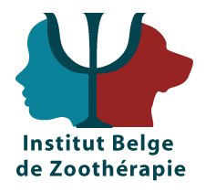
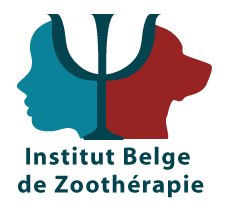
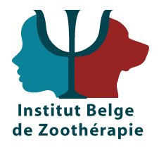

Zoothérapie et physiothérapie
Moi, c’est Perrine. À l’origine je suis physiothérapeute en réhabilitation neurologique. Ensuite, j'ai suivi une formation intensive de deux ans en zoothérapie pour intégrer le chien dans les séances de revalidation de mes patients. Je fais également partie de la Corporation des zoothérapeutes du Québec (CZQ).
Mais la vraie question est : Toi, de quoi as-tu besoin ?
En tant que professionnelle, je serai là pour t’encourager, te soutenir et t’ouvrir les yeux sur
ton potentiel.
Je t'inviterai à pousser tes limites un peu plus loin chaque fois et
t’aider à retrouver un équilibre qui te correspond.
Ce ne sera pas toujours facile mais je te
donnerai tous les outils dont tu as besoin pour réussir. Je marcherai à tes côtés et je
t’aiderai à te relever au besoin.
Je chercherai toujours à être au plus proche de ce qui est
le mieux pour toi. Je te ferai bouger dans ton corps et dans ton esprit.
Mes qualifications:
- Master en physiothérapie (Belge, actuellement en attente de la licence Canadienne)
- Expérience en physiothérapie et réhabilitation depuis 2015
- 2 ans de formation continue en zoothérapie et animation d'activités en Belgique
- Depuis mon arrivée au Canada en 2023, j'ai travaillé en collaboration avec divers zoothérapeutes basés sur Montréal et Ottawa


 

Depuis qu'il est bébé, Koda est entrainé et formé pour pouvoir t'accompagner pendant tes
séances, qu'importe ton âge ou ta situation !
Si tu veux avoir plus d'informations, c'est par ici.
Si tu veux en savoir un peux plus sur moi, voici quelques fun facts:
- J’adore la musique, chanter et danser même si je suis toujours en décalage par rapport au rythme. Et je réinvente les paroles des chansons!
- Au restaurant, je prends toujours le plat le plus créatif, j'adore découvrir de nouvelles choses.